Zoom || زووم
الاسم: زووم
المهمة: إمكانية التواصل عبر الجهاز المحمول والهاتف الذكي بين الاشخاص
أنظمة التشغيل المتاح عليها: ويندوز، ماك، أندرويد، وأيفون IOS
الثمن: مجاني ويحتوي على بعض الخدمات المدفوعة
كيف يعمل؟
يقدم برنامج زووم إمكانية التواصل عبر الجهاز المحمول والهاتف الذكي بين الاشخاص ويستخدم معظم الأحيان لإجراء الاجتماعات الخارجية و الندوات العامة. يقدم زووم خيارات عدة لادارة الاتصال بين الطرفين المتصليين عن طريق واجهه المستخدم البسيطة
يتكون هذا الدليل من ثلاثة أقسام رئيسية :
1- طريقة الاستخدام على أجهزة الكمبيوتر:
-
الدخول إلى الموقع الرسمي:
- نضغط هنا
-
تظهر الصفحة التالية، نقوم بالبحث عن "Sign Up Free" عن طريق النقط عند العلامة كما الصورة ونضغط
عليها
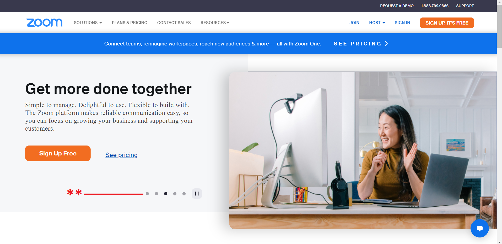
-
تظهر الصفحة التالية، نقوم بإدخال تاريخ ميلادنا في الحقل المخصص "السنة فقط"
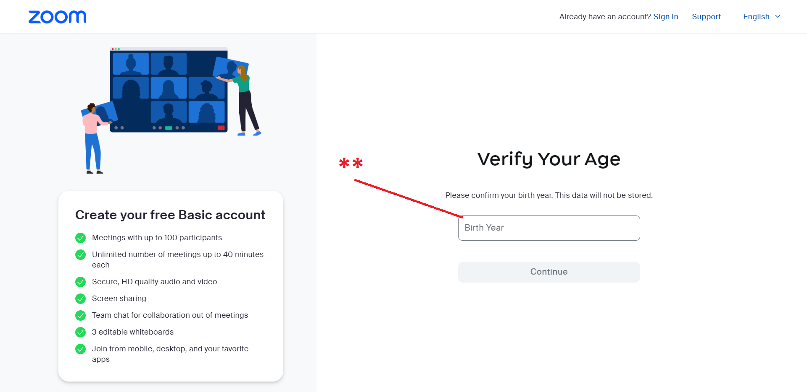 -
تظهر الصفحة التالية:
نقوم بإدخال الإيميل الشخصي في الحقل المخصص ثم نضغط "Continue"
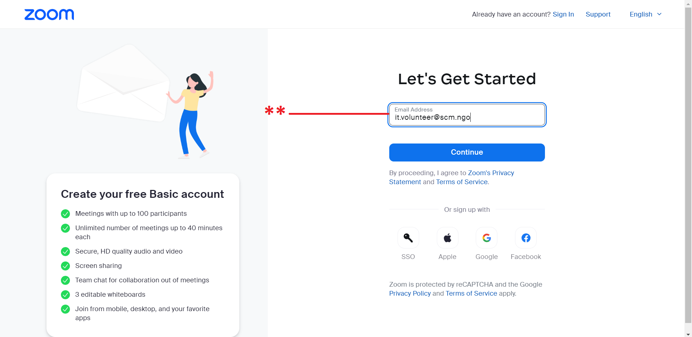 -
يقوم تطبيق زووم بإرسال رمز تأكيد إلى الايميل السابق إدخاله، يكون الايميل الوارد بعنوان "Zoom"، نأخذ
الكود ونضعه في المكان المخصص ثم نضغط "Verify"

-
بعد التأكيد تظهر الصفحة التالية، نقوم بملئ الحقول كالتالي:
- الاسم الأول
- الاسم الثاني أو الكنية
- كلمة سر جديدة
- تأكيد كلمة السر
- نضغط على "Continue"

- تظهر الصفحة التالية وتعني أنه تم إنشاء الحساب بنجاح، نضغط على "Let's Go" 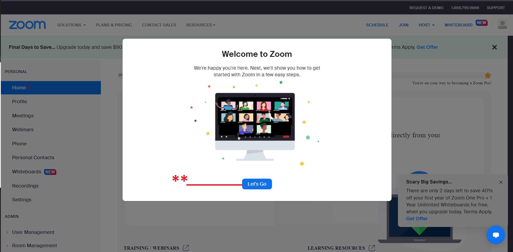
-
نقوم بتحميل التطبيق من هنا، تظهر
الصفحة التالية، نضغط على "Download"
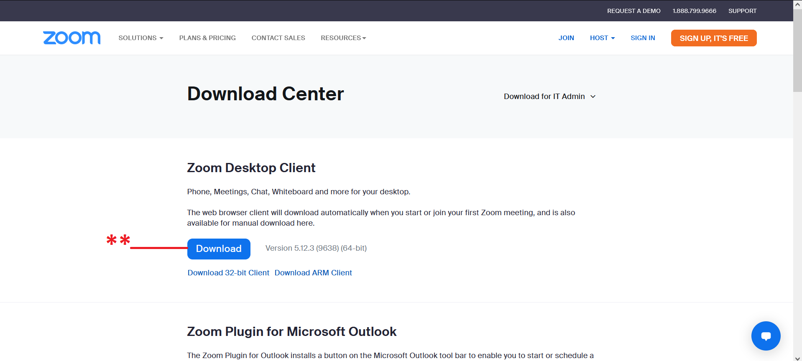 -
بعد التحميل، نقوم بفتح التطبيق، تظهر لنا النافذة التالية:
- إذا كنا نريد الانضمام إلى اجتماع عن طريق رابط أو اسم هذا الاجتماع
- لتسجيل الدخول وعمل اجتماع جديد أو الانضمام إلى اجتماع عن طريق الحساب الشخصي

- عند الضغط على الخيار الأول في الخطوة السابقة، تظهر النافذة التالية:
- ندخل الكود الخاص بالاجتماع، أو نقوم بنسخ لينك الاجتماع في هذا الحقل
- ندخل الاسم الذي نريد الظهور به في الاجتماع
- لتذكر أو حفظ الاسم للدخول به في الاجتماعات مستقبلاً
- عند تفعيل هذا الخيار، يقوم بغلق المايكروفون عند الدخول إلى الاجتماع
- عند تفعيل هذا الخيار، يقوم بغلق الكاميرا عند الدخول إلى الاجتماع
- نضغط "Join" للانضمام
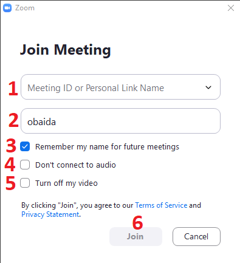 - عند الضغط على الخيار الثاني في الخطوة رقم 8، تظهر النافذة التالية:
- ندخل الايميل الذي أنشأنا حساب زووم عن طريقه
- ندخل كلمة السر السابق إنشاؤها
- نضغط "Sign in" لتسجيل الدخول
- عند تفعيل هذا الخيار، يقوم التطبيق بحفظ بيانات تسجيل الدخول تلقائيا
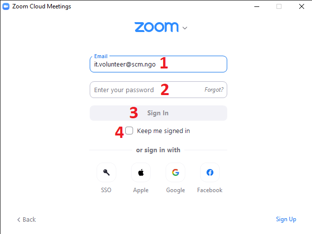 - بعد تسجيل الدخول، تظهر النافذة التالية وهي الواجهة الرئيسية لحسابنا على زووم:
- لإنشاء اجتماع جديد
- للانضمام إلى اجتماع، تظهر قائمة مثل الخطوة رقم 9، نتبع نفس الخطوات
- لجدولة اجتماع في المستقبل، تظهر نافذة نحدد منها تاريخ الاجتماع وفترته الزمنية
- لمشاركة الشاشة
-
عند إنشاء اجتماع جديد، تظهر النافذة التالية وهي الواجهة الرئيسية للاجتماع في تطبيق زووم:
- للتحكم بالميكروفون، فتح وإغلاق
- للتحكم بالكاميرا فتح وإغلاق
- لرؤية قائمة الأشخاص في الاجتماع
- لفتح نافذة المحادثة داخل الاجتماع
- لمشاركة الشاشة خلال الاجتماع
- لتسجيل الاجتماع وحفظه على الجهاز الخاص بنا
- لتفعيل ميزة الترجمة في حال كان الاجتماع بلغة أخرى
- للتفاعل مع الاجتماع، كطريقة للمشاركة والتفاعل مع المتحدث
- لفتح قائمة التطبيقات التي يمكن إضافتها إلى زووم
- لفتح الوايت بورد، وهي مساحة للرسم والكتابة داخل التطبيق تستخدم للشرح والتوضيح
- لإنهاء الاجتماع أو الخروج منه
- تفتح قائمة تحتوى على خيارات خاصة بالاجتماع كالتالي:
- لقفل الاجتماع، بحيث لا يستطيع أحد الدخول
- لتفعيل خاصية الانتظار، بحيث ينتظر المنضمين إلى الاجتماع الاذن من مدير الاجتماع ليقوم بإدخالهم
- لإخفاء الصورة الشخصية
- السماح للإعضاء بالتالي: مشاركة الشاشة - مشاركة في المحادثة الكتابية - إعادة تسمية أنفسهم داخل الاجتماع - كتم الصوت الخاص بهم - فتح الكاميرا الخاصة بهم - مشاركة مساحة الشرح أو الوايت بورد
- إلغاء كافة المميزات للإعضاء في الاجتماع، مثل قفل كافة الكاميرات، وإلغاء مشاركة الشاشة لدى الجميع.. الخ
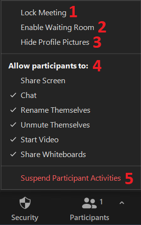
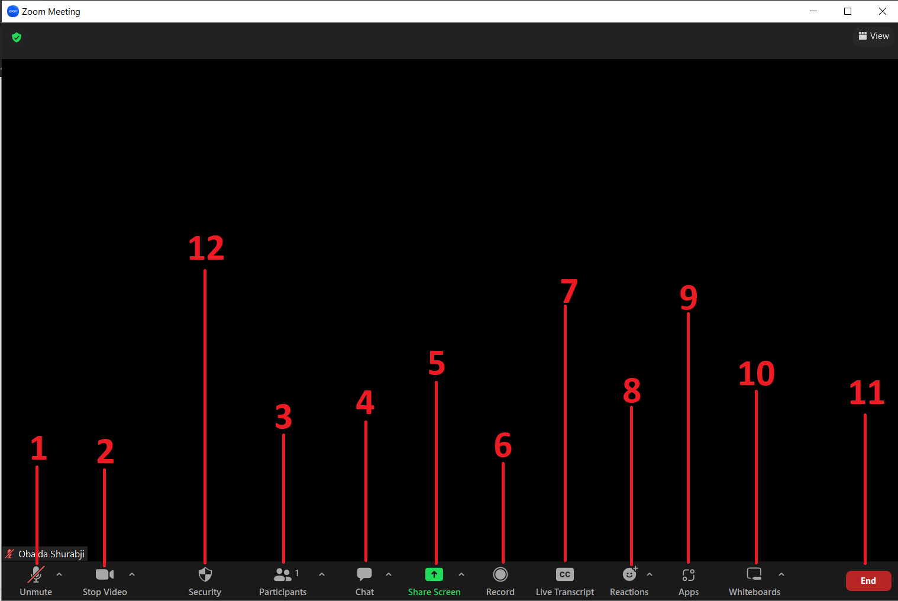
2- طريقة الاستخدام على أجهزة الموبايل:
- لأجهزة أندرويد هنا
- لأجهزة أيفون هنا
- بعد تحميل التطبيق، نقوم بفتحه، تظهر الصفحة التالية:
- للانضمام إلى اجتماع ما عن طريق لينك أو الكود الخاص بالاجتماع
- لإنشاء حساب جديد على زووم
- لتسجيل الدخول إلى حساب زووم
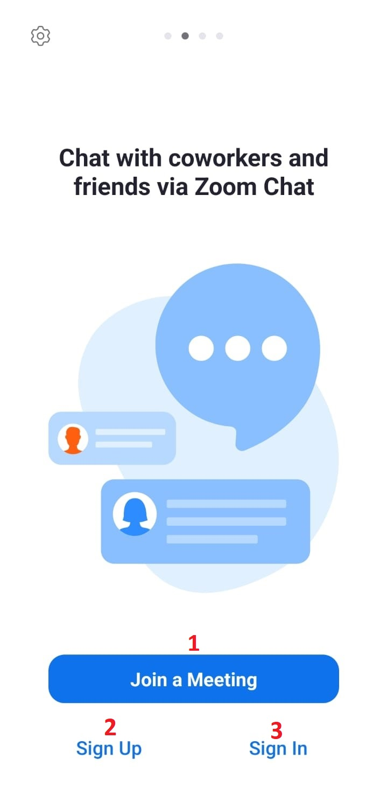 - عند الضغط على "Join a Meeting" في الخطوة السابقة، تظهر الصفحة التالية:
- نقوم بإدخال الكود الخاص بالاجتماع أو نسخ اللينك الخاص به في هذا الحقل
- نقوم بإدخال الاسم الذي نريد الظهور به
- عند تفعيل هذا الخيار يقوم بإغلاق المايكروفون عند الدخول
- عند تفعيل هذا الخيار يقوم بإغلاق الكاميرا عند الدخول
- "Join" للانضمام للاجتماع
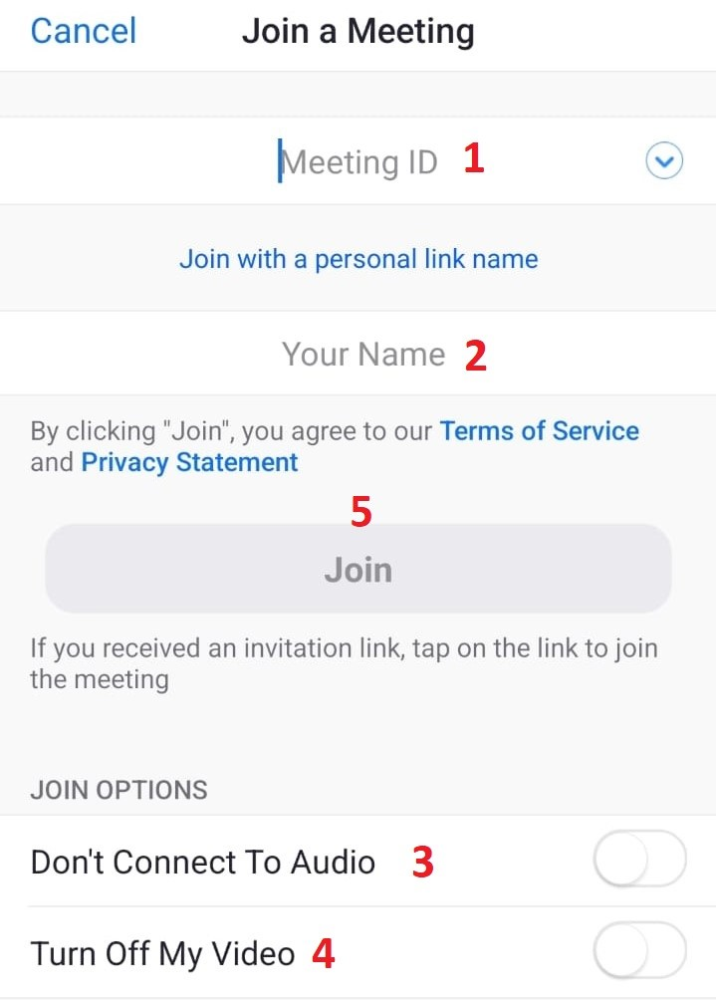 - عند الضغط على "Sign Up" في الخطوة الرابعة سابقا، تظهر الصفحة التالية:
- نقوم بإدخال تاريخ ميلادنا، لا يقوم تطبيق زووم بتسجيل هذه البيانات
- تظهر نافذة لإدخال تاريخ الميلاد، عند الانتهاء نضغط على "Set"
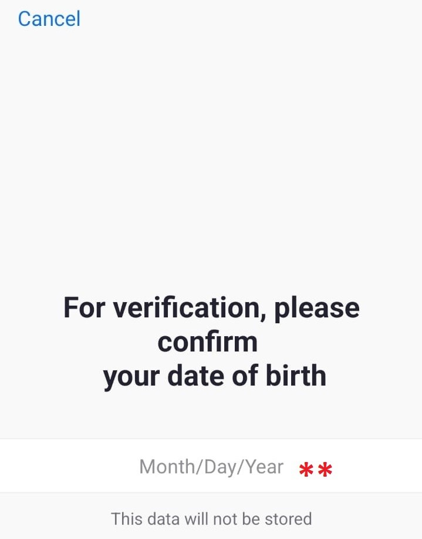 - عند الضغط على "Set"، تظهر الصفحة التالية:
- نقوم بإدخال الايميل الذي نريد إنشاء الحساب عن طريقه
- ندخل الاسم الأول الخاص بنا
- ندخل الاسم الثاني
- نضغط "Sign Up" للتسجيل
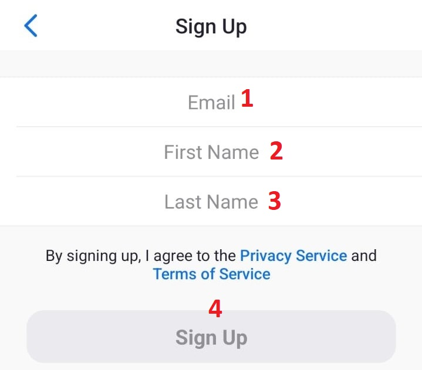 - عند الانتهاء من الخطوة السابقة، تظهر الصفحة التالية:
-
وتعني أنه تم إرسال رسالة تأكيد إلى الايميل الذي تم إدخاله في الخطوات السابقة
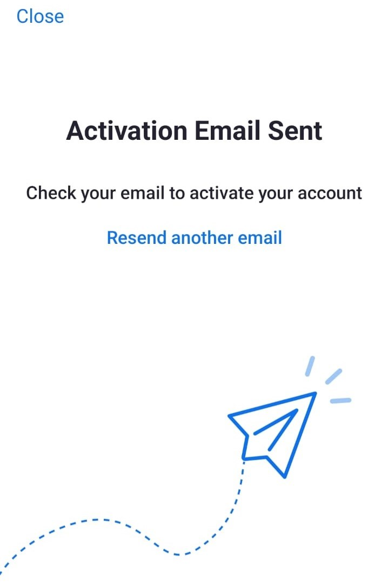 - نفتح الايميل الشخصي ونبحث في البريد الوارد عن رسالة بعنوان "Zoom"، نقوم بفتحها فتظهر الصفحة
التالية:
-
نقوم بالضغط على "ACTIVATE ACCOUNT" لبدء عملية تفعيل الحساب
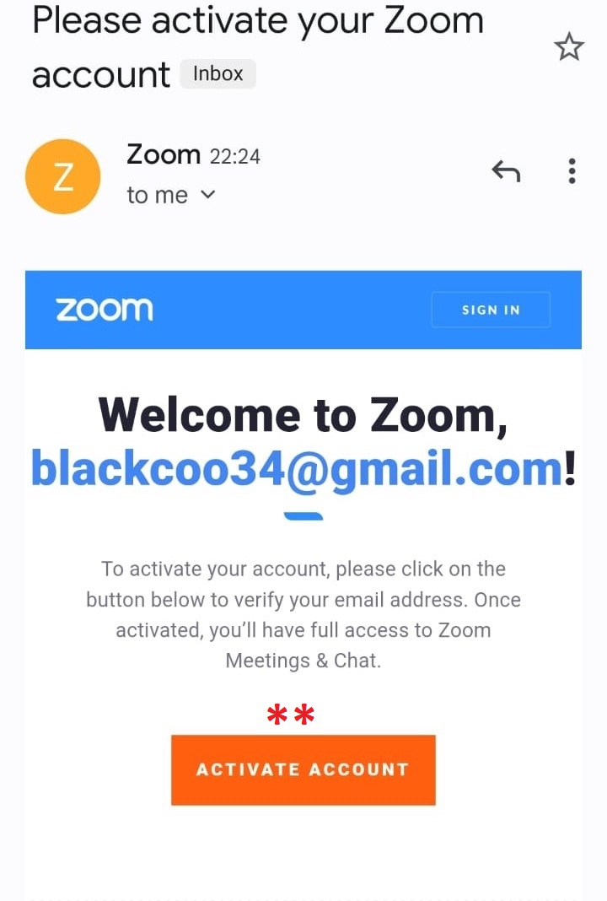 - عند تنفيذ الخطوة السابقة، تظهر الصفحة التالية:
- ندخل الاسم الأول الخاص بنا
- ندخل الاسم الثاني
- نقوم بإنشاء كلمة سر
- نقوم بإدخال كلمة السر مرة أخرى للتأكيد
- نضغط "Continue"
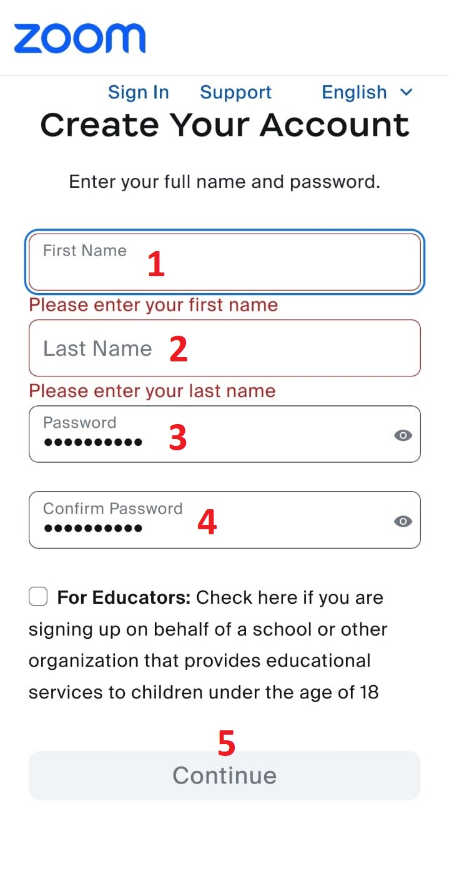 - قد تظهر الصفحة التالية:
- وتعني أنه تم إنشاء الحساب بنجاح
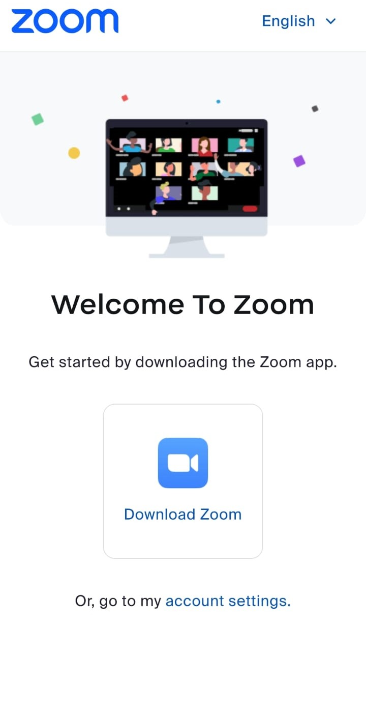 - نقوم بالعودة إلى تطبيق زووم، ثم نضغط على "Sign in" لتسجيل الدخول إلى الحساب، تظهر الصفحة التالية
- نقوم بإدخال الايميل الذي سبق إنشاء الحساب عن طريقه
- نقوم بإدخال كلمة السر
- نضغط "Sign In" للدخول إلى الحساب
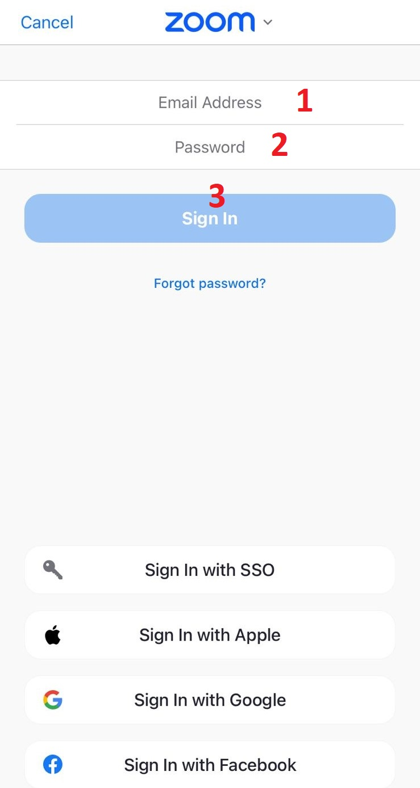 - تظهر الصفحة التالية، وهي الصفحة الرئيسية الخاصة بتطبيق زووم على الموبايل
-